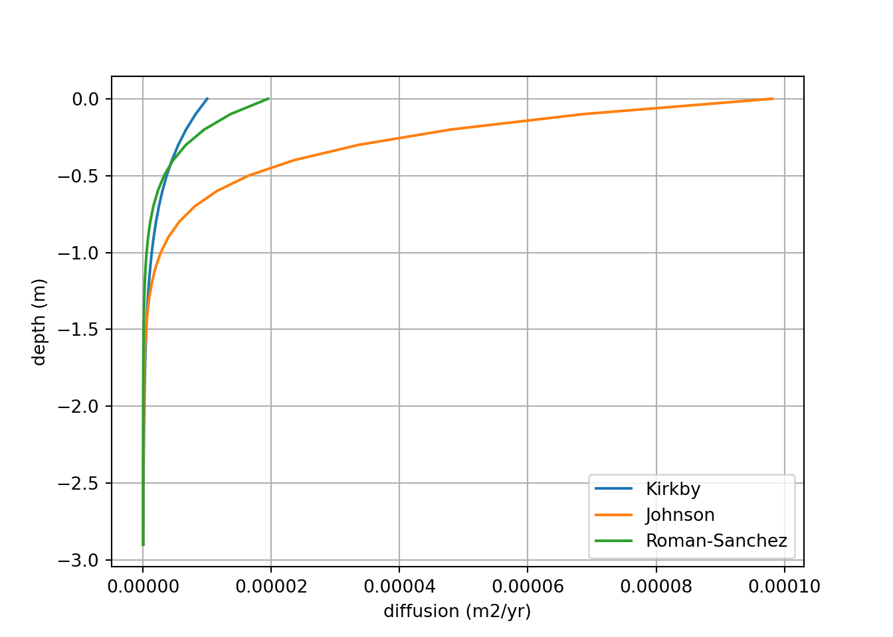
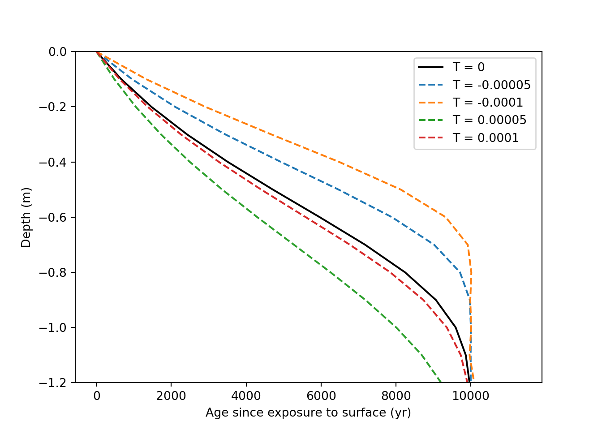
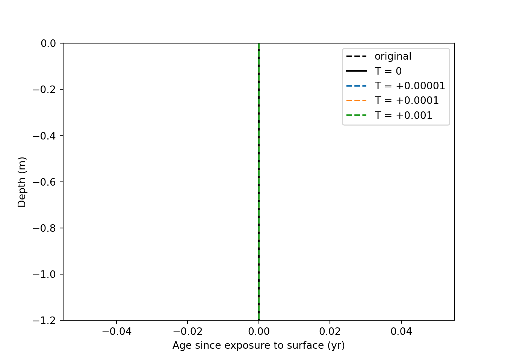

Section 6 Chapter II Notes
6.1 Conceptual Models
Define conceptual model: A conceptual model is a representation of the key elements of and relationships within some process or structure. Justify the need for conceptual models for animal activity:
They provide a framework for explaining the existence of and relationships between real observations.
As pedologists, we rely on conceptual models to describe morphology and ‘tell the story’ of a soil.
They inform the questions we ask about and methods we use to measure a soil or animal activity.
Before constructing a numerical model, we need to identify the processes that are relevant to our aim. That aim could be describing soil genesis or contaminant transport, carbon or nutrient cycling, erosion, etc.
The central idea of this section is to assess the role of animals in soil and landscape development. Specifically, to collect evidence for the statement:
Animals unintentionally create heterogeneity and homogeneity in soil and landscape development.
It begs the question, what kind of framework, whether qualitative or quantitative, can we create to broadly understand the role of organisms in soil and landscape development?
6.1.1 Factors of animal activity
Spatial variability
What is the lateral distribution of organisms’ disturbance [Hartemink et al., 2020]?
How does organism activity change with depth?
What is the relationship between disturbance size, distribution/frequency, and organisms/area?
How is organism activity related to topography or erosion?
Local vs. non-local mixing
Where is excavated material going? Are they constructing mounds and burrows or just pushing soil out of the way? If building mounds, are those mounds directly above or is soil also being moved laterally?
How is soil altered as it is transported [OM, structure change]?
Mixing vs sorting
What are organisms moving?
What aren’t they moving?
Where are they moving it to?
Time
How are the above changing over time?
What kind of feed back loops might organisms being encouraging?
6.1.2 Review of conceptual models
Hans Jenny (1941) provides an elegant framework to describe soil formation:
\[ S = f(cl, o, r, p, t) \]
Where soil (S) is a function (f()) of climate (cl), organisms (o), relief (r), parent material (p), and time (t). Jenny’s model is a powerful conceptual tool qualify the soil forming processes. Wilde (1946, p. 13) [found from Johnson & Watson-Stegner (1987)] suggests a slightly updated framework where prior factors are considered over time:
\[ S = f(cl, o, r, p)dt \]
6.1.3 New conceptual models
Jenny’s model is factorial approach that describes the exogenous/environmental properties influencing soil development. However, a perhaps more useful tool for soil and landscape modeling (conceptually and literally) is a process-based approach. Jenny’s original four variables can instead by described by several processes:
| Factor | Example process |
|---|---|
| climate | precipitation, eluviation, illuviation, advection |
| organisms | bioturbation, diffusion |
| relief | erosion, deposition, uplift |
| parent material | soil texture, weathering |
In the context of a landscape where bioturbation is present and substantial, I propose the following approach:
\[ S = f(D, E, P,\frac{dD}{dz},\frac{dP}{dz})dt \]
Where D is diffusion or mixing, E is erosion, and P is soil production. Soil production and diffusion notably also change with profile depth, which depends on the parent material and organisms.
An alternative, more geomorphological approach (that requires a considerably long timescale) could integrate landscape-scale diffusion and stream-power-based erosion plus uplift variables into a clorpt model by the following thought process. On a landscape scale, erosion can be described by:
\[ ε = KA^mS^n+D\frac{d^2z}{dx^2} \]
Where erosion is equal to the sum of stream-power-based erosion and diffusion. Including uplift, we can express the standard landscape evolution equation:
\[ \frac{dz}{dt} = U - KA^mS^n-D\frac{d^2z}{dx^2} \]
Over sufficiently long timescales, a system will eventually reach steady-state conditions, at which dz/dt is equal to zero. The above equation can then be rearranged to describe erosion rate as a function of U:
\[ U = KA^mS^n+D\frac{d^2z}{dx^2} \]
U can then be substituted into the cloprt model:
\[ S = f(D, U, P,\frac{dD}{dz},\frac{dP}{dz})dt \]
In another form, soil formation can be described as a piecewise function of soil depth:
\[\begin{equation} formation(z) = \left\{\begin{array}{lr} erosion/deposition(z), & z = 0 \\ mixing(z), & 0 < z < f \\ production(z), & z = f \end{array}\right. \end{equation}\]
All of these equations provide only a conceptual model to identify the internal and external processes that are forming soil. They provide a lense through which soils and landscapes can be viewed. The rest of this section focuses on this qualitative side, whereas the following modeling sections represent a quantitative approach.
6.1.4 References
Baxter, Timothy, Sam Woor, Martin Coombes, and Heather Viles. “The Geomorphic Work of the European Mole ( Talpa europaea ): Long‐term Monitoring of Molehills Using Structure‐from‐motion Photogrammetry.” Earth Surface Processes and Landforms, October 13, 2024, esp.6008. https://doi.org/10.1002/esp.6008.
Cox, G. W., & Allen, D. W. (1987). Soil translocation by pocket gophers in a Mima moundfield. Oecologia 72, 207-210.
Grinnell, Joseph. “THE BURROWING RODENTS OF CALIFORNIA AS AGENTS IN SOIL FORMATIONl.” JOURNAL OF MAMMALOGY, 1923.
Hansen, R. M. (n.d.). MOVEMENT OF ROCKS BY NORTHERN POCKET GOPI-IERS. 49.
Miller, M. A. (1957). Burrows of the Sacramento Valley pocket gopher in flood-irrigated alfalfa fields. Hilgardia, 26(8), 431–452. https://doi.org/10.3733/hilg.v26n08p431
Nye, P. H. “Some Soil-Forming Processes in the Humid Tropics.” Journal of Soil Science 5, no. 1 (1954): 7–21. https://doi.org/10.1111/j.1365-2389.1954.tb02171.x.
Yeates, G. W., & Van Der Meulen, H. (1995). Burial of soil-surface artifacts in the presence of lumbricid earthworms. Biology and Fertility of Soils, 19(1), 73–74. https://doi.org/10.1007/BF00336350
Gabet, Emmanuel J., O.J. Reichman, and Eric W. Seabloom. “The Effects of Bioturbation on Soil Processes and Sediment Transport.” Annual Review of Earth and Planetary Sciences 31, no. 1 (May 2003): 249–73. https://doi.org/10.1146/annurev.earth.31.100901.141314.
Gabet, Emmanuel J. “Gopher Bioturbation: Field Evidence for Non-Linear Hillslope Diffusion.” Earth Surface Processes and Landforms 25, no. 13 (2000): 1419–28. https://doi.org/10.1002/1096-9837(200012)25:13<1419::AID-ESP1483.0.CO;2-1.
Jenny, H. (1941). Factors of Soil Formation A System of Quantitative Pedology. Dover Publications.
Johnson, D. L., and D. Watson-Stegner. “EVOLUTION MODEL OF PEDOGENESIS:” Soil Science 143, no. 5 (May 1987): 349–66. https://doi.org/10.1097/00010694-198705000-00005.
6.2 Annotated Bibliography
Gabet et al. (2003)
introduces a quantitative model for understanding sediment transport by tree throw. Gabet (2000) uses a similar approach to model hillslope morphology in gopher-activity dominated systems. The author suggests a new equation for hillslope evolution based on hillslope gradient:
\[ q_s(\frac{cm^3}{cm*a})=176(\frac{dz}{dx})^3-189(\frac{dz}{dz})^2+68(\frac{dz}{dx}) \]
The following equation represents a general framework for how bioturbators move soil (qs sediment flux) on a hillslope:
\[ q_s = \frac{vol}{event} * \frac{distance}{event} * \frac{events}{area} * \frac{events}{time} \]
The authors in Gabet et al. (2003) also provide an overview of the role several bioturbators play in soil development and formation (physical disturbance of saprolie).
References:
Whitford 2000 - Ants are selective in the grain sizes they move, increases the heterogeneity of soil grain size
de Bruyn & Conacher 1994 - quantifies mass moved by termites
Reichman & Smith 1990 - vertebrate burrow diameter and characteristics
Smallwood & Morrison 1999 - burrow excavation dynamics of different gophers
Reichman et al 1982 - Lateral soil heterogeneity from burrows
Klaas et al. 2000 - Lateral soil heterogeneity from mounds
Heimsath et al. 1999 - Gophers converting bedrock to soil
Bowerman & Redente 1998 - role of bio-intrusion on waste site disruption
Johnson & Watson-Stegner (1987)
provide a novel framework for soil evolution: one that describe soil as a function of progressive and regressive pedogensis. Progressive pedogensis includes horizonation processes, developmental up-building, and soil deepening. Regressive pedogensis includes haploidization processes, retardant up-building, and soil removal. Development up-building, versus retardant up-building, requires added material be pedogenetically assimilated into the profile. Often this depends on the rate of addition. The authors suggest positive and negative vectors for the following that together drive or oppose soil development:
Horizonation ( + ) <————> Haploidization ( - )
Evolution vectors:
Removals (from one or more horizons) ( + / - )
Translocations ( + / - )
Transformations ( + / - )
Feedback processes ( + / - )
Bioturbation ( + / - )
Upbuilding ( + / - )
Deepening ( + )
Removals ( - )
The authors also introduce the idea of internal feedback processes endogenic soil properties dominate over exogenic, environmental factors. For example, a petrocalcic horizon may develop in soil with a Ca rich parent material under an arid climate. This petrocalcic horizon, a product of soil genesis, impacts future development though leaching or bioturbation. A threshold was crossed that put the soil down a unique pedogenetic pathway.
The authors also reference Jenny’s 1941 clopt model and use that elegant framework to describe their approach of soil genesis. It is a reminder of the utility of that basic equation and it’s many applications.
References:
Yaalon (1971) and Ruellan (1971) soil feedback processes
Wilde (1946, p. 13) include dt in clorpt
Vreeken (1975a) soil landscape processes
Johnson et al. (1987b) dynamic rate model
\[ S = f(D, P, \frac{dD}{dt}, \frac{dP}{dt}) \]
- Runge (1973) and Volobuyeve (1984) thermodyanics of soil end points
(Nye, 1954)
discusses the genesis of a catena of tropical soils in West Africa making reference to the role of soil fauna, here ants, earthworms, and termites, in the creation of stonelines in soils. The author compares the soil texture of termite mounds to that of the suspected termite-formed horizon and finds them similar. He makes notes about coarse fragment size relating to bedrock fracture density and the releative importance of clay illuviation in texture contrast development.
(Baxter et al., 2024)
details the evolution of European mole hills over time. Authors created a table of review data w/ mole hill evolution rates. Note about the importance of disturbance regime. Moles reconstruct collapsed burrows. If burrows are frequently collapsed (e.g. by floods or human disturbance), moles will anually excavate more sediment than those in stable landscapes. This poses a challenge for measurement, because we then need both mound abundance and disturbance regime.
Rutin, (1992); Sanders et al. (2021) on the role of burrowing animals in slope failure
Rice, (2021) why burrowing animals are underlooked in geomorphology
(Grinnell, 1923)
discusses vaguley many qualities of gophers. Suggets they may have been present for the last 200-300 years in California.
6.3 Models and Code
This first code chunk defines the shared structures and variables used by the following code chunks. It has no outputs itself.
# build structures for data inputs. These do not get overwritten.
dz = 0.1 # m
z = np.arange(0, 3, dz, dtype=float) # create an array of depths
y = np.zeros(z.shape, dtype=float) # create a blank array for y, copies shape of z
p = np.zeros(z.shape, dtype=float)# create a blank array for p, copies shape of z
# [set] initial p values
p += 1 # mass soil / volume soil
# [set] total time
total_time = 10000 # years
# [set] erosion/denudation rate. erosion (-)
T = 0 # m / yr
# Define the exponential diffusion equation
def D(z, D0, zb):
return D0 * np.exp(-z/zb) # in m2/yr
# adjust timestep size
dt = 0.2 * dz**2 / 10**(-3) # sets time step size, based on Courant–Friedrichs–Lewy condition. Currently a general, low value
time_steps = int(total_time / dt) # calculates total number of time steps
def OSL_plt_defaults():
plt.ylim(-1.2, 0)
plt.legend()
plt.xlabel('Age since exposure to surface (yr)')
plt.ylabel('Depth (m)')
plt.show()This code plots the differing exponential D(z) equations.

This code uses the above the equations to simulate an age profile of soil grains created by biodiffusion, local mixing, only.
# define OSL diffusion only function
def OSL_diffusion(z, y, p, dz, dt, T, D):
y_copy = y.copy()
for i in range(time_steps):
qy = -1 * D[0:-1] * np.diff(y_copy * p) / dz
diff = -1 * np.diff(qy) / dz
advec = T * -np.diff(y_copy * p) / dz
dydt = diff + advec[0:-1] + 1
y_copy[1:-1] += dydt * dt
return y_copy
Johnson = OSL_diffusion(z, y, p, dz, dt, T, D(z, 9.81 * 10**(-5), 0.28))
Kirkby = OSL_diffusion(z, y, p, dz, dt, T, D(z, 10**(-5), 0.50))
plt.clf()
plt.plot(Johnson, -z, label = "Johnson et al. (2014)")
plt.plot(Kirkby, -z, label = "Kirkby (1985)")
OSL_plt_defaults()
This code generates a visualization of the impact of erosion on a theoretical tracer profile. 1) tracer profile at steady state, 2) tracer profile moves downwards under deposition, and 3) tracer profile moves upwards under erosion. Soil surface at z = 0.

This code adds advection, by erosion and deposition, to the model.
T1 = OSL_diffusion(z, y, p, dz, dt, 0, D(z, 9.81 * 10**(-5), 0.28))
T2 = OSL_diffusion(z, y, p, dz, dt, -0.00005, D(z, 9.81 * 10**(-5), 0.28))
T3 = OSL_diffusion(z, y, p, dz, dt, -0.0001, D(z, 9.81 * 10**(-5), 0.28))
T4 = OSL_diffusion(z, y, p, dz, dt, 0.00005, D(z, 9.81 * 10**(-5), 0.28))
T5 = OSL_diffusion(z, y, p, dz, dt, 0.00001, D(z, 9.81 * 10**(-5), 0.28))
plt.clf()
plt.plot(T1, -z, label = "T = 0", color = "Black")
plt.plot(T2, -z, label = "T = -0.00005", linestyle='--')
plt.plot(T3, -z, label = "T = -0.0001", linestyle='--')
plt.plot(T4, -z, label = "T = 0.00005", linestyle='--')
plt.plot(T5, -z, label = "T = 0.0001", linestyle='--')
OSL_plt_defaults()
This code uses the above function to do some “tracer” plotting with different deposition values.
# define OSL diffusion, with a tracer, function
def local_diffusion(z, y, p, dz, dt, T, D):
y_copy = y.copy()
for i in range(time_steps):
qy = -1 * D[0:-1] * np.diff(y_copy * p) / dz
diff = -1 * np.diff(qy) / dz
advec = T * -np.diff(y_copy * p) / dz
dydt = diff + advec[0:-1]
y_copy[1:-1] += dydt * dt
return y_copy
smart0 = local_diffusion(z, y, p, dz, dt, 0, D(z, 9.81 * 10**(-5), 0.28))
smart = local_diffusion(z, y, p, dz, dt, 0.00001, D(z, 9.81 * 10**(-5), 0.28))
smart2 = local_diffusion(z, y, p, dz, dt, 0.0001, D(z, 9.81 * 10**(-5), 0.28))
smart3 = local_diffusion(z, y, p, dz, dt, 0.001, D(z, 9.81 * 10**(-5), 0.28))
plt.clf()
plt.plot(y, -z, label = "original", color = "Black", linestyle='--')
plt.plot(smart0, -z, label = "T = 0", color = "Black")
plt.plot(smart, -z, label = "T = +0.00001", linestyle='--')
plt.plot(smart2, -z, label = "T = +0.0001", linestyle='--')
plt.plot(smart3, -z, label = "T = +0.001", linestyle='--')
OSL_plt_defaults()
This code does the above equation
# [set] initial y values
yi = y.copy()
yi[z == 0] += 1 # mass or activity y / mass soil
# [set] initial p values
pi = p.copy()
pi += 1 # mass soil / volume soil
# define isotope local diffusion function, constant D
def local_diffusion(z, yi, p, dz, dt, T, D):
y_copy = y.copy()
for i in range(time_steps):
qy = -1 * D[0:-1] * np.diff(y_copy * p) / dz
diff = -1 * np.diff(qy) / dz
advec = T * -np.diff(y_copy * p) / dz
dydt = diff + advec[0:-1]
y_copy[1:-1] += dydt * dt
return y_copy